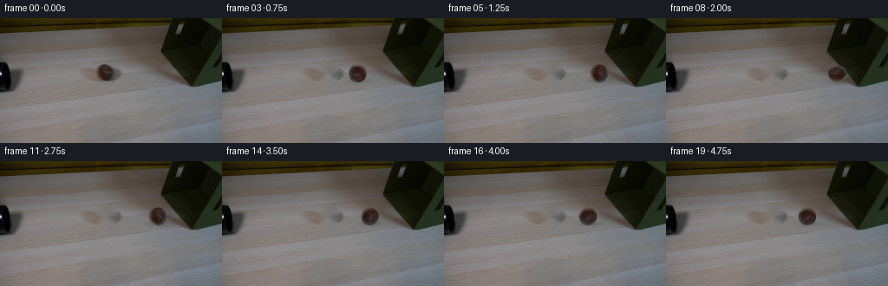
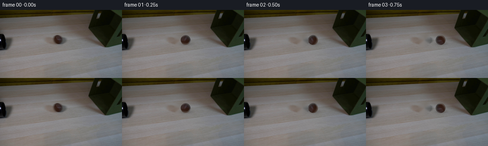

CODING AGENTS AS PIXEL WORLD MODELS
traex/GPT-5.6-Sol · 0151
点击播放 · 原生 RGB 像素
逐轮保存的候选
回放视频、检查图与代码变化。
每份候选均可单独播放。实际图片检查记录在下方工具轨迹中。
候选 01播放与检查图
点击播放 · 原生 RGB 像素


展开代码变化
--- 上一保存版本
+++ 本次保存版本
@@ -0,0 +1,115 @@
+from pathlib import Path
+import numpy as np
+import cv2
+from PIL import Image
+import artifact_io
+
+# Locked camera animation derived only from the supplied first photograph.
+ROOT = Path(__file__).resolve().parent
+first = np.asarray(Image.open(ROOT / "first_frame.png").convert("RGB"), dtype=np.uint8)
+H, W = first.shape[:2]
+
+# The ball visible in the first photograph is centered here. Remove it once to
+# obtain the fixed plate; OpenCV's inpainting only interpolates nearby pixels.
+CX0, CY0 = 121.5, 63.2
+remove = np.zeros((H, W), np.uint8)
+cv2.ellipse(remove, (122, 63), (13, 13), 0, 0, 360, 255, -1)
+plate_bgr = cv2.inpaint(first[:, :, ::-1], remove, 4.0, cv2.INPAINT_TELEA)
+plate = plate_bgr[:, :, ::-1]
+
+# Keep the genuine photographed surface and mottling of the ball. Sampling is
+# clamped just inside the photographed silhouette so rotated edge pixels never
+# pick up the table behind it.
+radius = 10.3
+source = first.astype(np.float32)
+
+def bilinear_rgb(image, xs, ys):
+ x0 = np.floor(xs).astype(np.int32); y0 = np.floor(ys).astype(np.int32)
+ x1 = np.clip(x0 + 1, 0, W - 1); y1 = np.clip(y0 + 1, 0, H - 1)
+ x0 = np.clip(x0, 0, W - 1); y0 = np.clip(y0, 0, H - 1)
+ wx = (xs - x0)[..., None]; wy = (ys - y0)[..., None]
+ return ((1-wx)*(1-wy)*image[y0,x0] + wx*(1-wy)*image[y0,x1] +
+ (1-wx)*wy*image[y1,x0] + wx*wy*image[y1,x1])
+
+def dent_fabric(img, amount):
+ """Small, elastic indentation of the olive fabric at the contact point."""
+ if amount <= 0:
+ return img.copy()
+ yy, xx = np.mgrid[0:H, 0:W].astype(np.float32)
+ # The box's near edge is at x ~= 208 at ball height. Shift just that local
+ # edge right; both fabric texture and its soft edge move continuously.
+ fall_y = np.exp(-0.5*((yy-63.5)/10.0)**2)
+ fall_x = np.exp(-0.5*((xx-207.0)/12.0)**2)
+ dx = amount * fall_y * fall_x
+ mapx = xx - dx
+ return cv2.remap(img, mapx, yy, cv2.INTER_LINEAR,
+ borderMode=cv2.BORDER_REFLECT_101)
+
+def add_shadow(img, cx, cy, strength, velocity):
+ yy, xx = np.mgrid[0:H, 0:W]
+ # Contact shadow is narrow and falls slightly right/down from the ball.
+ sx = 8.0 + min(abs(velocity)*0.05, 1.0)
+ sy = 2.3
+ g = np.exp(-0.5*(((xx-(cx+1.2))/sx)**2 + ((yy-(cy+8.3))/sy)**2))
+ a = (strength*g)[...,None]
+ return img.astype(np.float32)*(1.0-a)
+
+def draw_ball(img, cx, cy, angle_deg, squash=0.0, velocity=0.0):
+ out = add_shadow(img, cx, cy, 0.19, velocity)
+ # Slight squash at impact conserves volume: wider and a touch flatter.
+ rx = radius*(1.0 + 0.075*squash)
+ ry = radius*(1.0 - 0.10*squash)
+ pad = 14
+ xlo=max(0,int(np.floor(cx-pad))); xhi=min(W,int(np.ceil(cx+pad+1)))
+ ylo=max(0,int(np.floor(cy-pad))); yhi=min(H,int(np.ceil(cy+pad+1)))
+ yy,xx=np.mgrid[ylo:yhi,xlo:xhi].astype(np.float32)
+ ux=(xx-cx)/rx; uy=(yy-cy)/ry
+ rho=np.sqrt(ux*ux+uy*uy)
+ # Correct antialias width in pixels.
+ alpha=np.clip((1.045-rho)/0.095,0,1)
+
+ th=np.deg2rad(angle_deg)
+ cs, sn=np.cos(th), np.sin(th)
+ # Rotate the photographed spherical texture opposite to the coordinates.
+ qx=(ux*cs + uy*sn)*radius
+ qy=(-ux*sn + uy*cs)*radius
+ qr=np.sqrt(qx*qx+qy*qy)
+ edge=8.9
+ scale=np.minimum(1.0, edge/np.maximum(qr,1e-5))
+ qx*=scale; qy*=scale
+ tex=bilinear_rgb(source, CX0+qx, CY0+qy)
+
+ # Gentle directional relighting remains fixed in world space and makes the
+ # sphere read as solid even while its photographed texture rotates.
+ nx=np.clip((xx-cx)/rx,-1,1); ny=np.clip((yy-cy)/ry,-1,1)
+ relight=1.0 + 0.045*(-0.65*nx-0.75*ny) - 0.018*(nx*nx+ny*ny)
+ tex=np.clip(tex*relight[...,None],0,255)
+ a=alpha[...,None]
+ out[ylo:yhi,xlo:xhi] = out[ylo:yhi,xlo:xhi]*(1-a)+tex*a
+ return np.clip(out,0,255).astype(np.uint8)
+
+# Ball advances from the left-hand tube, meets the fabric box, compresses for a
+# moment and rebounds with diminishing speed. These are quarter-second samples.
+xs = np.array([121.5,133.0,144.5,156.0,167.5,178.5,188.5,196.0,
+ 197.5,192.0,186.5,181.5,177.0,173.2,170.0,167.5,
+ 165.5,164.0,163.0,162.4], dtype=np.float32)
+ys = np.array([63.2,63.2,63.2,63.2,63.2,63.2,63.2,63.2,
+ 63.5,63.3,63.2,63.2,63.2,63.2,63.2,63.2,
+ 63.2,63.2,63.2,63.2], dtype=np.float32)
+squashes = np.array([0,0,0,0,0,0,0,.22,.72,.20,0,0,0,0,0,0,0,0,0,0],np.float32)
+dents = np.array([0,0,0,0,0,0,0,.7,2.5,1.5,.55,.12,0,0,0,0,0,0,0,0],np.float32)
+
+frames=[first.copy()]
+angle=0.0
+for i in range(1,20):
+ dx=float(xs[i]-xs[i-1])
+ # Rolling without slipping; negative is clockwise for rightward travel.
+ angle -= np.degrees(dx/radius)
+ base=dent_fabric(plate, float(dents[i]))
+ frame=draw_ball(base, float(xs[i]), float(ys[i]), angle,
+ float(squashes[i]), dx)
+ frames.append(frame)
+frames=np.stack(frames).astype(np.uint8)
+assert frames.shape == (20,144,256,3)
+assert np.array_equal(frames[0], first)
+artifact_io.save(frames, ROOT)
可观测工具轨迹
实际执行的命令与返回图片。
命令 1exit 0
/bin/bash -lc "cat GENERATION_RULES.md && printf '\\n---PROMPT---\\n' && cat prompt.txt"
命令 2exit 0
/bin/bash -lc "find . -maxdepth 2 -type f -printf '%p %s bytes\\n' | sort && printf '\\nTOOLS\\n' && command -v ffmpeg || true && command -v python3 || true"
命令 3exit 0
/bin/bash -lc "sed -n '1,240p' artifact_io.py"
命令 4exit 0
/bin/bash -lc "python3 - <<'PY'
from PIL import Image
import numpy as np
im=np.array(Image.open('first_frame.png').convert('RGB'))
print(im.shape, im.dtype, im.min((0,1)), im.max((0,1)), im.mean((0,1)).round(1))
# dominant quantized colors
q=(im//16)*16
u,c=np.unique(q.reshape(-1,3),axis=0,return_counts=True)
for i in np.argsort(c)[-25:][::-1]: print(c[i],u[i])
# mean/std per every 12 rows
for y in range(0,144,12):
a=im[y:y+12];print('row',y, a.mean((0,1)).astype(int),a.std((0,1)).astype(int))
PY"命令 5exit 0
/bin/bash -lc "python3 - <<'PY'
from PIL import Image
import numpy as np
im=np.array(Image.open('first_frame.png').convert('RGB'))
# blocks 4x4, determine mean category char
for y in range(0,144,4):
s=''
for x in range(0,256,4):
a=im[y:y+4,x:x+4].mean((0,1)); r,g,b=a; v=a.mean()
if v<20:c='#'
elif v<40:c='D'
elif v<65:c='d'
elif g>r*1.12 and g>b*1.15:c='G'
elif r>g*1.12 and r>b*1.25:c='B'
elif v<85:c='o'
elif v<105:c=':'
elif v<120:c='-'
elif v<135:c='.'
else:c=' '
s+=c
print(f'{y:3}',s)
PY"命令 6exit 0
/bin/bash -lc "python3 - <<'PY'
import numpy as np
from PIL import Image
from scipy.ndimage import label,find_objects
from sklearn.cluster import KMeans
im=np.array(Image.open('first_frame.png').convert('RGB'))
# kmeans pixels xy ignored
km=KMeans(10,random_state=0,n_init=3).fit(im.reshape(-1,3)[::3])
cent=np.round(km.cluster_centers_).astype(int); print('centers',list(enumerate(cent)))
labs=km.predict(im.reshape(-1,3)).reshape(144,256)
# reorder labels by center luminance
for y in range(0,144,3):
print(''.join('0123456789'[np.bincount(labs[y:y+3,x:x+3].ravel(),minlength=10).argmax()] for x in range(0,256,3)))
print('components darkness')
for th in [15,25,40,55]:
m=im.mean(2)<th; L,n=label(m)
out=[]
for i,sl in enumerate(find_objects(L),1):
if sl:
area=(L[sl]==i).sum()
if area>20:out.append((area,(sl[1].start,sl[0].start,sl[1].stop-1,sl[0].stop-1)))
print(th,sorted(out,reverse=True)[:15])
PY"命令 7exit 0
/bin/bash -lc "python3 - <<'PY'
try: import cv2; print('cv2',cv2.__version__)
except Exception as e: print(e)
PY"命令 8exit 0
/bin/bash -lc "python3 - <<'PY'
import cv2,numpy as np
from PIL import Image
im=cv2.imread('first_frame.png'); g=cv2.cvtColor(im,cv2.COLOR_BGR2GRAY)
e=cv2.Canny(g,30,80)
# ascii 2x2 edges
for y in range(0,100,2):
print(f'{y:3}', ''.join('#' if e[y:y+2,x:x+2].max() else ' ' for x in range(0,256,2)))
# samples every 16 px / selected y
im=im[:,:,::-1]
for y in [0,8,16,24,32,40,48,56,64,72,80,88,96,112,128,143]:
print('\\ny',y)
for x in range(0,256,16): print(f'{x}:{im[y,x]}',end=' ')
PY"命令 9exit 0
/bin/bash -lc "python3 - <<'PY'
from PIL import Image
import numpy as np
im=np.array(Image.open('first_frame.png').convert('RGB'))
# print 2px grid for x85:155 y42:80 categories exact grayscale/chroma
for y in range(42,82,2):
s=''
for x in range(80,161,2):
a=im[y:y+2,x:x+2].mean((0,1)); v=a.mean(); chrom=a.max()-a.min()
if v<25:c='#'
elif v<45:c='D'
elif v<65:c='d'
elif v<85:c='o'
elif v<105:c=':'
elif v<120:c='-'
elif v<132:c='.'
elif v<145:c=' '
else:c='*'
s+=c
print(y,s)
# detailed region around x120
print('detailed gray')
chars='@%#*+=-:. '
for y in range(48,77):
print(f'{y:3}',''.join(chars[min(9,int(im[y,x].mean()/150*10))] for x in range(105,140)))
PY"命令 10exit 0
/bin/bash -lc "python3 - <<'PY'
from PIL import Image
import numpy as np
im=np.array(Image.open('first_frame.png').convert('RGB')).astype(int)
for y in range(50,75,2):
print(y,[(x,im[y,x].tolist(),int(im[y,x].mean())) for x in range(108,138,3)])
PY"命令 11exit 0
/bin/bash -lc "python3 - <<'PY'
from PIL import Image
import numpy as np
im=np.array(Image.open('first_frame.png').convert('RGB'))
for y in [52,56,60,63,66,70,72,74,76,78]:
print(y,[(x,int(im[y,x].mean()),im[y,x].tolist()) for x in range(180,215,2)])
PY"命令 12exit 0
/bin/bash -lc "python3 - <<'PY'
import cv2,numpy as np
im=cv2.imread('first_frame.png')[:,:,::-1]; v=im.mean(2)
for y in range(0,80,4):
ids=np.where(v[y,180:235]<55)[0]; print(y,180+ids[0] if len(ids) else None)
PY"命令 13exit 0
/bin/bash -lc "cat > generate.py <<'PY'
from pathlib import Path
import numpy as np
import cv2
from PIL import Image
import artifact_io
# Locked camera animation derived only from the supplied first photograph.
ROOT = Path(__file__).resolve().parent
first = np.asarray(Image.open(ROOT / \"first_frame.png\").convert(\"RGB\"), dtype=np.uint8)
H, W = first.shape[:2]
# The ball visible in the first photograph is centered here. Remove it once to
# obtain the fixed plate; OpenCV's inpainting only interpolates nearby pixels.
CX0, CY0 = 121.5, 63.2
remove = np.zeros((H, W), np.uint8)
cv2.ellipse(remove, (122, 63), (13, 13), 0, 0, 360, 255, -1)
plate_bgr = cv2.inpaint(first[:, :, ::-1], remove, 4.0, cv2.INPAINT_TELEA)
plate = plate_bgr[:, :, ::-1]
# Keep the genuine photographed surface and mottling of the ball. Sampling is
# clamped just inside the photographed silhouette so rotated edge pixels never
# pick up the table behind it.
radius = 10.3
source = first.astype(np.float32)
def bilinear_rgb(image, xs, ys):
x0 = np.floor(xs).astype(np.int32); y0 = np.floor(ys).astype(np.int32)
x1 = np.clip(x0 + 1, 0, W - 1); y1 = np.clip(y0 + 1, 0, H - 1)
x0 = np.clip(x0, 0, W - 1); y0 = np.clip(y0, 0, H - 1)
wx = (xs - x0)[..., None]; wy = (ys - y0)[..., None]
return ((1-wx)*(1-wy)*image[y0,x0] + wx*(1-wy)*image[y0,x1] +
(1-wx)*wy*image[y1,x0] + wx*wy*image[y1,x1])
def dent_fabric(img, amount):
\"\"\"Small, elastic indentation of the olive fabric at the contact point.\"\"\"
if amount <= 0:
return img.copy()
yy, xx = np.mgrid[0:H, 0:W].astype(np.float32)
# The box's near edge is at x ~= 208 at ball height. Shift just that local
# edge right; both fabric texture and its soft edge move continuously.
fall_y = np.exp(-0.5*((yy-63.5)/10.0)**2)
fall_x = np.exp(-0.5*((xx-207.0)/12.0)**2)
dx = amount * fall_y * fall_x
mapx = xx - dx
return cv2.remap(img, mapx, yy, cv2.INTER_LINEAR,
borderMode=cv2.BORDER_REFLECT_101)
def add_shadow(img, cx, cy, strength, velocity):
yy, xx = np.mgrid[0:H, 0:W]
# Contact shadow is narrow and falls slightly right/down from the ball.
sx = 8.0 + min(abs(velocity)*0.05, 1.0)
sy = 2.3
g = np.exp(-0.5*(((xx-(cx+1.2))/sx)**2 + ((yy-(cy+8.3))/sy)**2))
a = (strength*g)[...,None]
return img.astype(np.float32)*(1.0-a)
def draw_ball(img, cx, cy, angle_deg, squash=0.0, velocity=0.0):
out = add_shadow(img, cx, cy, 0.19, velocity)
# Slight squash at impact conserves volume: wider and a touch flatter.
rx = radius*(1.0 + 0.075*squash)
ry = radius*(1.0 - 0.10*squash)
pad = 14
xlo=max(0,int(np.floor(cx-pad))); xhi=min(W,int(np.ceil(cx+pad+1)))
ylo=max(0,int(np.floor(cy-pad))); yhi=min(H,int(np.ceil(cy+pad+1)))
yy,xx=np.mgrid[ylo:yhi,xlo:xhi].astype(np.float32)
ux=(xx-cx)/rx; uy=(yy-cy)/ry
rho=np.sqrt(ux*ux+uy*uy)
# Correct antialias width in pixels.
alpha=np.clip((1.045-rho)/0.095,0,1)
th=np.deg2rad(angle_deg)
cs, sn=np.cos(th), np.sin(th)
# Rotate the photographed spherical texture opposite to the coordinates.
qx=(ux*cs + uy*sn)*radius
qy=(-ux*sn + uy*cs)*radius
qr=np.sqrt(qx*qx+qy*qy)
edge=8.9
scale=np.minimum(1.0, edge/np.maximum(qr,1e-5))
qx*=scale; qy*=scale
tex=bilinear_rgb(source, CX0+qx, CY0+qy)
# Gentle directional relighting remains fixed in world space and makes the
# sphere read as solid even while its photographed texture rotates.
nx=np.clip((xx-cx)/rx,-1,1); ny=np.clip((yy-cy)/ry,-1,1)
relight=1.0 + 0.045*(-0.65*nx-0.75*ny) - 0.018*(nx*nx+ny*ny)
tex=np.clip(tex*relight[...,None],0,255)
a=alpha[...,None]
out[ylo:yhi,xlo:xhi] = out[ylo:yhi,xlo:xhi]*(1-a)+tex*a
return np.clip(out,0,255).astype(np.uint8)
# Ball advances from the left-hand tube, meets the fabric box, compresses for a
# moment and rebounds with diminishing speed. These are quarter-second samples.
xs = np.array([121.5,133.0,144.5,156.0,167.5,178.5,188.5,196.0,
197.5,192.0,186.5,181.5,177.0,173.2,170.0,167.5,
165.5,164.0,163.0,162.4], dtype=np.float32)
ys = np.array([63.2,63.2,63.2,63.2,63.2,63.2,63.2,63.2,
63.5,63.3,63.2,63.2,63.2,63.2,63.2,63.2,
63.2,63.2,63.2,63.2], dtype=np.float32)
squashes = np.array([0,0,0,0,0,0,0,.22,.72,.20,0,0,0,0,0,0,0,0,0,0],np.float32)
dents = np.array([0,0,0,0,0,0,0,.7,2.5,1.5,.55,.12,0,0,0,0,0,0,0,0],np.float32)
frames=[first.copy()]
angle=0.0
for i in range(1,20):
dx=float(xs[i]-xs[i-1])
# Rolling without slipping; negative is clockwise for rightward travel.
angle -= np.degrees(dx/radius)
base=dent_fabric(plate, float(dents[i]))
frame=draw_ball(base, float(xs[i]), float(ys[i]), angle,
float(squashes[i]), dx)
frames.append(frame)
frames=np.stack(frames).astype(np.uint8)
assert frames.shape == (20,144,256,3)
assert np.array_equal(frames[0], first)
artifact_io.save(frames, ROOT)
PY
python3 generate.py
python3 - <<'PY'
from PIL import Image
import numpy as np
im=np.array(Image.open('frames/00.png')); src=np.array(Image.open('first_frame.png'))
print('frame0 exact',np.array_equal(im,src),'outputs',len(list(__import__('pathlib').Path('frames').glob('*.png'))))
for i in range(20):
a=np.array(Image.open(f'frames/{i:02d}.png')); print(i,round(np.mean(abs(a.astype(int)-src.astype(int))),3),np.sum(np.any(a"'!=src,2)))
PY'保存候选 1 份；完成命令 13 次；可验证图片返回 0 张。原始 API 响应与完整日志保留在本地。